← Sushanth Dasari Field studies A collection of original computational graphics, made for the disappearing image trail on this site. Each is a visual interpretation of a research question or project, not a scientific result.
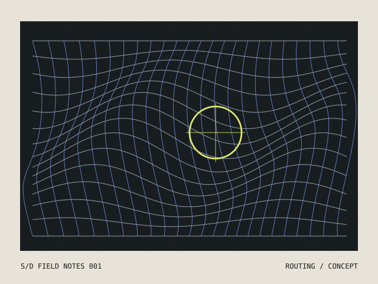
01 / Folded topology Kernellum 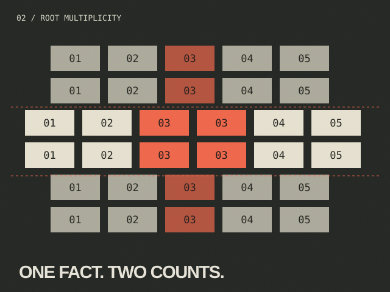
02 / Root multiplicity CopyCAT 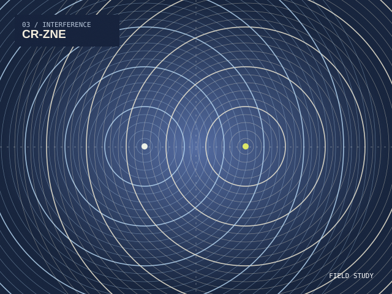
03 / Interference field CR-ZNE 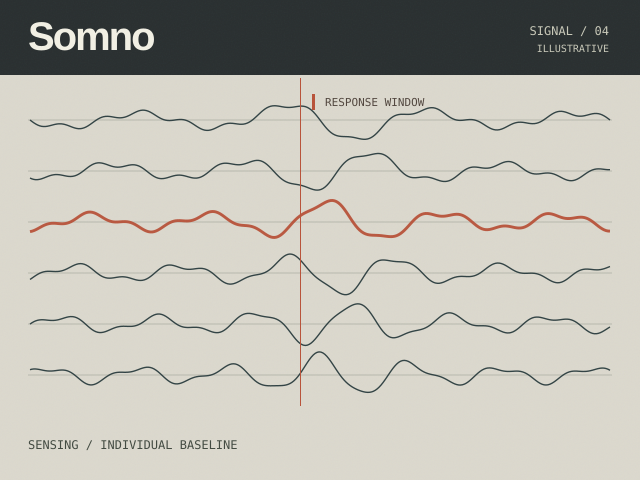
04 / Response window Somno 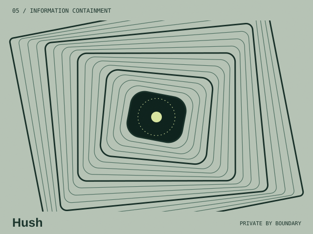
05 / Containment Hush 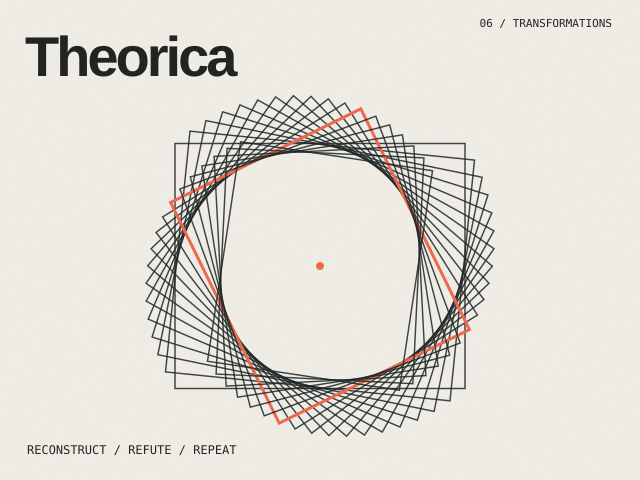
06 / Algebraic orbit Theorica 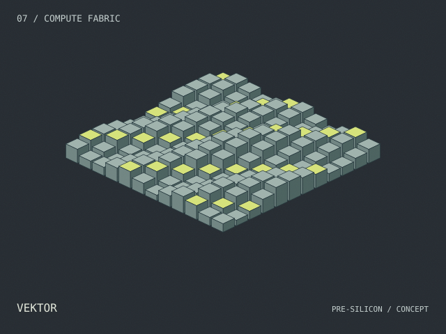
07 / Compute fabric Vektor 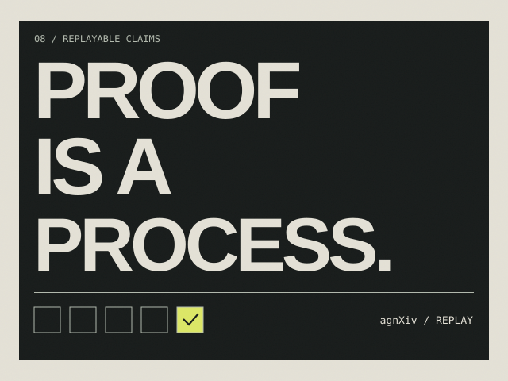
08 / Proof is a process agnXiv 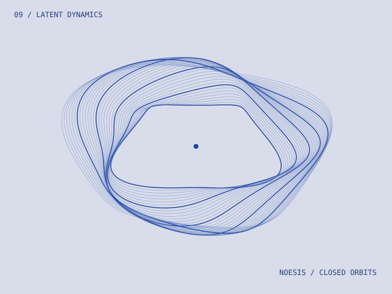
09 / Latent dynamics NOESIS 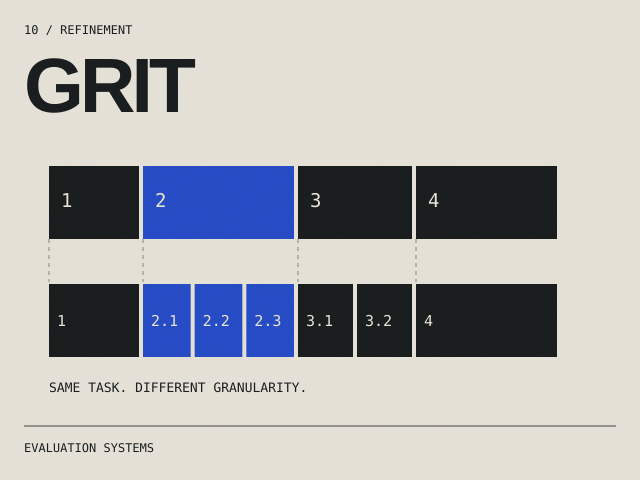
10 / Invariant under refinement GRIT 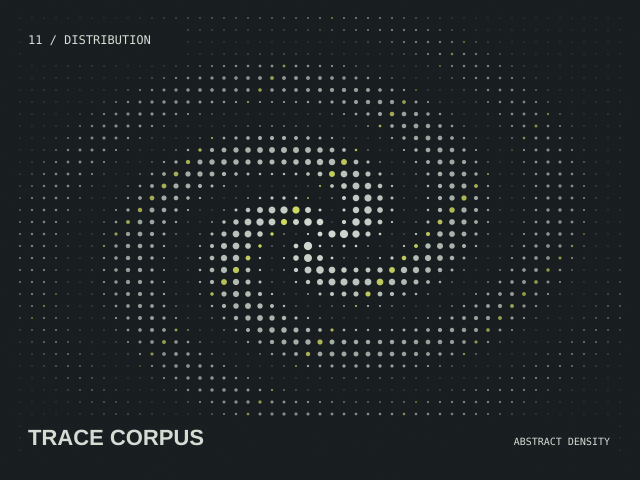
11 / Trace density Trace Corpus 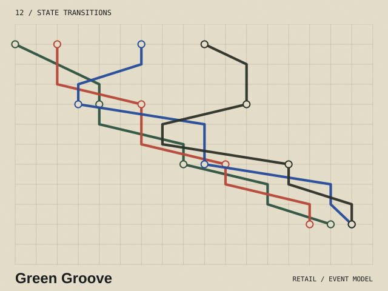
12 / Event model Green Groove 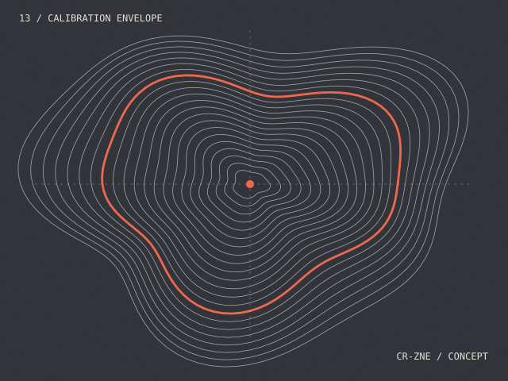
13 / Calibration envelope CR-ZNE 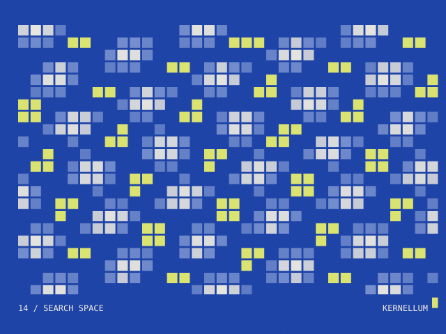
14 / Search space Kernellum